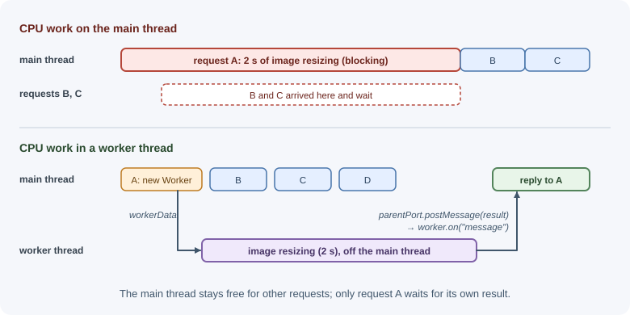
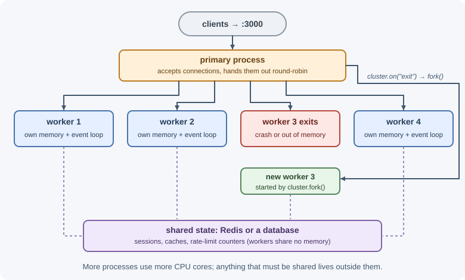
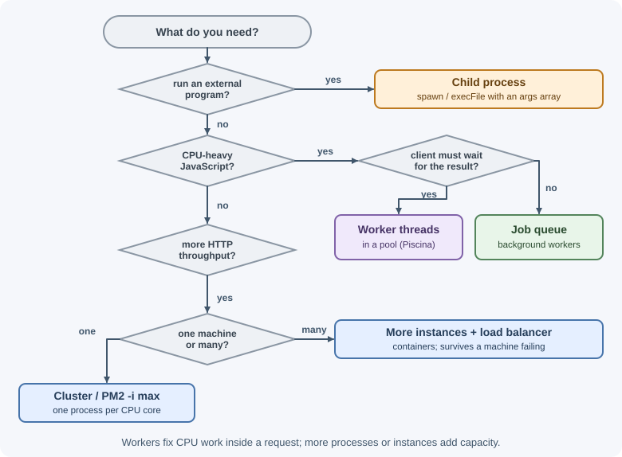

Worker Threads, Child Processes, and Cluster¶
A Node.js process runs your JavaScript on one main thread, which uses one CPU core. To run CPU-heavy work without freezing the server, or to use every core on a machine, Node.js offers three tools: worker threads (more threads in the same process), child processes (separate programs), and the cluster module (several copies of your server sharing a port).
Why it matters¶
A single image resize, PDF render, or large calculation on the main thread blocks every other request (see the event loop). And a server on an 8-core machine that runs one Node.js process leaves seven cores idle. Choosing the right tool—and knowing when to scale with more containers instead—is a core backend skill. For the operating-system background, see processes and threads.
Real-world usage¶
- Heroku explains that Node.js is single-threaded, so it "can't
automatically take advantage of additional CPU cores". Apps must fork
multiple processes with the Cluster API, and Heroku recommends that all
Node.js apps support clustering, tuned through the
WEB_CONCURRENCYvariable (Heroku Dev Center: Optimizing Node.js application concurrency). - PM2's cluster mode scales a networked Node.js app across all CPUs
"without any code modifications", using the Node.js cluster module
underneath.
pm2 reloadrestarts the processes one at a time for a zero-downtime reload (PM2 docs: Cluster mode). - Piscina is a widely used worker-thread pool for Node.js. Services use it to run CPU-heavy tasks such as image or document processing in a fixed set of reusable workers instead of on the main thread (Piscina on GitHub).
Popular tools and providers: node:worker_threads, node:child_process,
and node:cluster; Piscina for worker pools; PM2 and systemd for process
management; Kubernetes and ECS for running one process per container.
How it works¶
The CPU-bound problem¶
Work is I/O-bound when it mostly waits (database queries, HTTP calls) and CPU-bound when it keeps the processor busy (hashing, compression, image processing, parsing huge files). Node.js handles I/O-bound work well on one thread. CPU-bound work must move somewhere else.

Worker threads¶
The node:worker_threads module runs JavaScript in additional threads
inside the same process. Each worker has its own V8 instance, event
loop, and memory heap, so a worker's long computation does not block the
main thread.
Key pieces:
| API | Purpose |
|---|---|
new Worker(file, { workerData }) |
Starts a worker running file, passing initial data. |
workerData (in the worker) |
The data passed at creation. |
parentPort.postMessage(value) (in the worker) |
Sends a message to the main thread. |
worker.postMessage(value) / worker.on("message") |
Two-way messaging from the main thread. |
worker.on("error"), worker.on("exit") |
Failure and termination events. |
isMainThread |
true in the main thread. |
How data moves: messages are copied with the structured clone
algorithm (similar to a deep copy). Large buffers can be transferred
instead—ownership moves to the receiver with no copy—by listing them in the
transferList. A transferred ArrayBuffer becomes unusable in the sender.
Shared memory: a SharedArrayBuffer can be read and written by several
threads at once. Coordinating that safely requires Atomics operations.
Shared memory is powerful but rarely needed in typical backends.
Costs: starting a worker takes time and memory, so creating one per request is wasteful. Keep a pool of long-lived workers instead.
Worker pools¶
A pool starts a fixed number of workers (often equal to the number of CPU cores) and queues tasks for them. Libraries such as Piscina implement this:
import Piscina from "piscina";
const pool = new Piscina({
filename: new URL("./resize-worker.js", import.meta.url).href,
});
const thumbnail = await pool.run({ path: "photo.jpg", width: 200 });
The worker file exports a function that receives each task.
Child processes¶
The node:child_process module starts separate operating-system
processes. They can be any program: a shell command, Python, ImageMagick,
ffmpeg, or another Node.js script.
| Function | Shell? | Output | Typical use |
|---|---|---|---|
spawn(cmd, args) |
No (by default) | Streams (stdout, stderr) |
Long-running commands or large output. |
execFile(file, args) |
No | Buffered into a string | Running a program with arguments and getting its output. |
exec(commandString) |
Yes | Buffered (default maxBuffer is about 1 MB) |
Quick shell one-liners with trusted input only. |
fork(modulePath) |
No | Streams + an IPC message channel | Running another Node.js script and exchanging messages. |
Shell injection
exec runs its string through a shell. If any part comes from a user,
an input such as photo.jpg; rm -rf / runs a second command. Use
execFile or spawn with an arguments array, which never invokes a
shell:
// Dangerous
exec(`convert ${userFile} out.png`);
// Safe: arguments are passed directly, not parsed by a shell
execFile("convert", [userFile, "out.png"]);
Child processes are heavier than worker threads (separate memory, startup cost), but they isolate crashes completely and can run non-JavaScript tools.
The cluster module¶
The node:cluster module starts several copies of your server—workers—
from one primary process. All workers share the same port, and incoming
connections are distributed among them. The default is round-robin by the
primary on every platform except Windows, where the operating system decides.
In a quick test on Windows, four requests in a row all went to the same
worker.

Each worker is a full Node.js process with its own memory. They do not share state: an in-memory cache, session store, or rate-limit counter in one worker is invisible to the others. Shared state must live in an external store such as Redis or a database.
PM2 cluster mode¶
The PM2 process manager wraps the cluster module so you don't write the primary logic yourself:
pm2 start src/server.js -i max # one process per CPU core
pm2 reload all # zero-downtime restart, one worker at a time
pm2 logs
Scaling with containers instead¶
In containerized deployments, the common pattern is to run one Node.js process per container and run several containers behind a load balancer. The orchestrator (Kubernetes, ECS, and so on) handles restarts, health checks, and scaling. Using cluster inside each container is possible but usually unnecessary.
When to use and when not to use¶
Do not reach for these tools when:
- The work is I/O-bound (database calls, HTTP requests): one Node.js thread already handles it well, and workers add overhead.
- The task runs for a few milliseconds: starting a worker or a process costs more than the work.
- You already scale with several containers behind a load balancer: running cluster inside each container usually adds nothing.
- The heavy job does not need to finish during the request: put it on a job queue instead.
| Need | Use | Why |
|---|---|---|
| CPU-heavy JavaScript (hashing, parsing, image work in JS) without blocking requests | Worker threads (with a pool) | Same process, cheap messaging, main thread stays free. |
Run an external program (ffmpeg, git, a Python script) |
Child process (spawn/execFile) |
Only option for non-Node programs; isolated. |
| Run another Node.js script with message passing and full isolation | fork |
Separate process with an IPC channel. |
| Use all CPU cores for HTTP traffic on one machine or VM | Cluster or PM2 cluster mode | Several server processes on one port. |
| Scale across machines, survive machine failure | More containers/instances behind a load balancer | Horizontal scaling; see scalability. |
| Long or heavy jobs that need not finish during the request | Background job queue | Retries and durability; see background jobs. |

Practical examples¶
Offloading a calculation to a worker¶
// fib-worker.js
import { parentPort, workerData } from "node:worker_threads";
function fibonacci(n) {
return n < 2 ? n : fibonacci(n - 1) + fibonacci(n - 2); // deliberately slow
}
parentPort.postMessage(fibonacci(workerData));
// server.js
import { createServer } from "node:http";
import { Worker } from "node:worker_threads";
function runFibonacci(n) {
return new Promise((resolve, reject) => {
const worker = new Worker(new URL("./fib-worker.js", import.meta.url), {
workerData: n,
});
worker.once("message", resolve);
worker.once("error", reject);
worker.once("exit", (code) => {
if (code !== 0) reject(new Error(`Worker exited with code ${code}`));
});
});
}
createServer(async (request, response) => {
if (request.url === "/fib") {
const result = await runFibonacci(42); // main thread stays free meanwhile
return response.end(`fib(42) = ${result}\n`);
}
response.end("fast route still responds instantly\n");
}).listen(3000);
(This starts a new worker per request to keep the example short; use a pool in real services.)
Tested on Node.js 22: while /fib computed for about 4.4 seconds, a request
to / was answered in about 30 ms, and /fib then returned
fib(42) = 267914296.
Streaming output from a child process¶
import { spawn } from "node:child_process";
const child = spawn("ffmpeg", ["-i", "input.mov", "-f", "mp4", "output.mp4"]);
child.stderr.on("data", (chunk) => process.stdout.write(chunk)); // ffmpeg logs to stderr
child.on("error", (error) => console.error("Failed to start:", error.message));
child.on("close", (code) => console.log(`ffmpeg exited with ${code}`));
Running a command and capturing output¶
import { execFile } from "node:child_process";
import { promisify } from "node:util";
const execFileAsync = promisify(execFile);
const { stdout } = await execFileAsync("git", ["rev-parse", "--short", "HEAD"]);
console.log(`Deployed commit: ${stdout.trim()}`);
A cluster with automatic restarts¶
import cluster from "node:cluster";
import { availableParallelism } from "node:os";
import { createServer } from "node:http";
if (cluster.isPrimary) {
const count = availableParallelism();
console.log(`Primary ${process.pid} starting ${count} workers`);
for (let i = 0; i < count; i++) cluster.fork();
cluster.on("exit", (worker, code, signal) => {
console.log(`Worker ${worker.process.pid} died (${signal ?? code}); restarting`);
cluster.fork();
});
} else {
createServer((request, response) => {
response.end(`Handled by worker ${process.pid}\n`);
}).listen(3000);
}
Best practices¶
- Keep the main thread for I/O and coordination; move CPU-heavy work to a worker pool sized near the number of cores.
- Never pass untrusted input to
exec; useexecFileorspawnwith an argument array. - Always handle
errorandexitevents for workers and child processes. - Set limits on child processes: timeouts (
timeoutoption or anAbortSignal) and output size. - Keep shared state (sessions, caches, counters) in an external store when running multiple processes.
- In containers, prefer one process per container and scale horizontally.
- For heavy work that does not need an immediate answer, use a job queue rather than doing it inside the request.
In production¶
- Memory blows up under load.
- Symptom: RSS jumps with traffic to one endpoint, and the process is killed for running out of memory.
- Detect: thread counts and memory rise together; each request creates a
new Worker. - Cause: a worker per request: each one has its own V8 isolate and heap.
- Fix: use a fixed-size pool (Piscina) sized near the number of cores, and queue the excess.
- Users see each other's rate limits or sessions reset.
- Symptom: logins appear to be "forgotten" on some requests, or rate limits allow far more traffic than configured.
- Detect: the problem only appears with cluster, PM2
-i, or several containers; the process ID in logs differs between requests. - Cause: sessions, caches, or counters kept in process memory are not shared between processes.
- Fix: move shared state to Redis or a database.
- Command injection through a filename.
- Symptom: unexpected commands appear in process listings or audit logs after an upload.
- Detect: filenames with
;,&&, or backticks in request logs. - Cause:
exec()with user input in the command string. - Fix: use
execFile/spawnwith an arguments array, and validate filenames. - A child process hangs or its output is cut off.
- Symptom: requests that call an external tool never finish, or
execfails withERR_CHILD_PROCESS_STDIO_MAXBUFFER. - Detect: child processes pile up in
ps, or the error namesmaxBuffer. - Cause: no timeout on the child, or output larger than
exec's 1 MB default buffer. - Fix: set the
timeoutoption or anAbortSignal, and usespawnto stream large output.
Important terminology¶
- CPU-bound: Work limited by processor speed rather than waiting.
- Worker thread: An additional JavaScript thread with its own event loop inside the same process.
- Structured clone: The algorithm used to copy messages between threads.
- Transferable: An object (such as an
ArrayBuffer) whose ownership can move between threads without copying. - Worker pool: A fixed set of reusable workers that process queued tasks.
- Child process: A separate OS process started by your program.
- IPC (inter-process communication): A channel for messages between
processes, provided by
fork. - Cluster: A primary process plus worker processes sharing a server port.
- Horizontal scaling: Adding more instances rather than making one bigger.
Common mistakes and misconceptions¶
- "Worker threads make I/O faster." I/O is already non-blocking; workers help with CPU work.
- Creating a new worker for every request instead of using a pool.
- Using
execwith user input, enabling command injection. - Expecting cluster workers to share memory. Each is a separate process.
- "Cluster is required to scale Node.js." Containers behind a load balancer are often the better choice.
- Ignoring worker or child
errorevents, which can crash the process or hide failures.
Revision questions¶
- What is the difference between I/O-bound and CPU-bound work, and why does it matter in Node.js?
- How do worker threads communicate, and what does transferring a buffer mean?
- Why is
execdangerous with user input, and what should you use instead? - What does the cluster module do, and why can't workers share an in-memory cache?
- When would you scale with containers instead of the cluster module?
- Which tool would you choose to run
ffmpeg, and why?